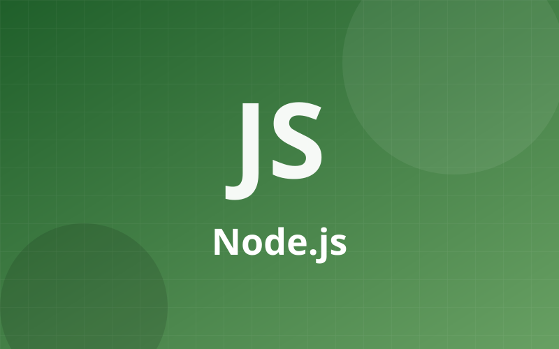
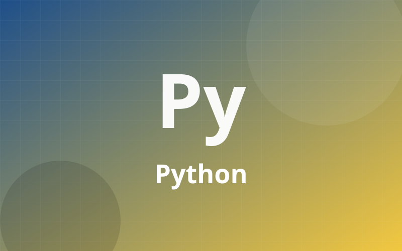
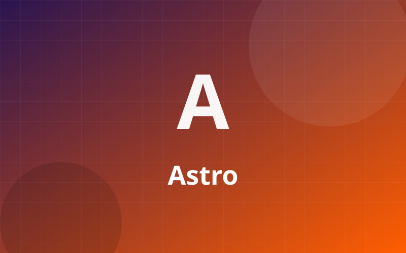
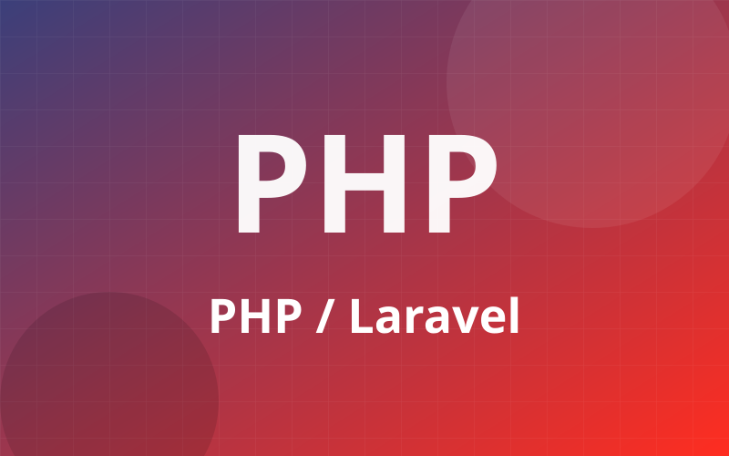
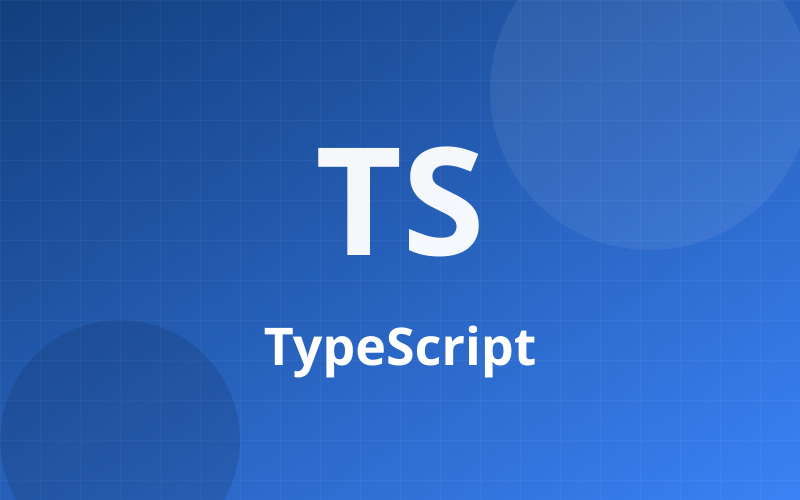
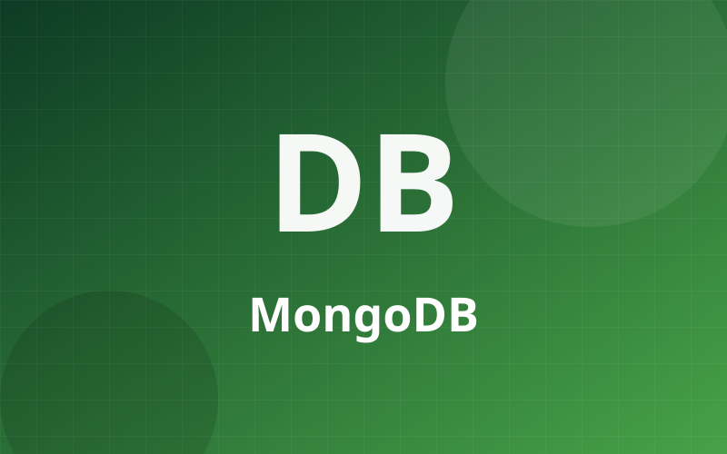
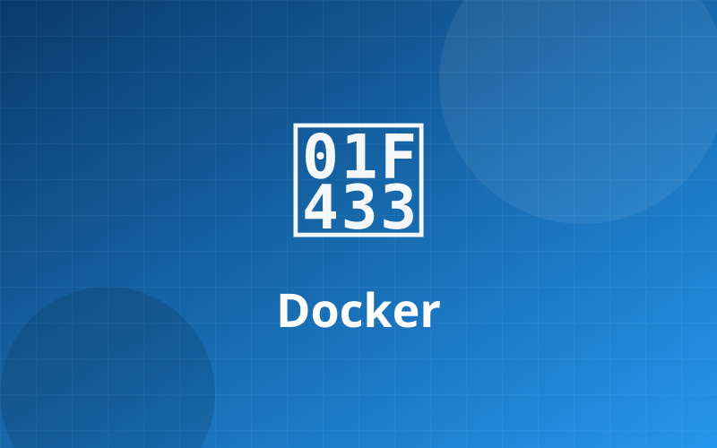
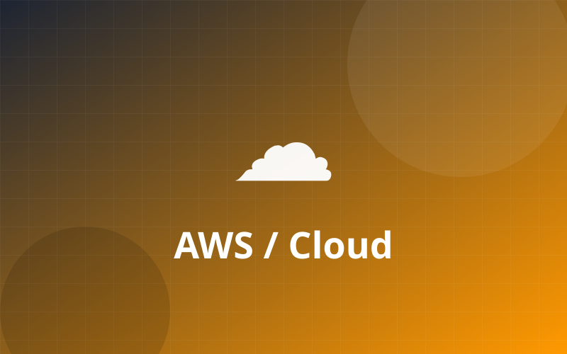
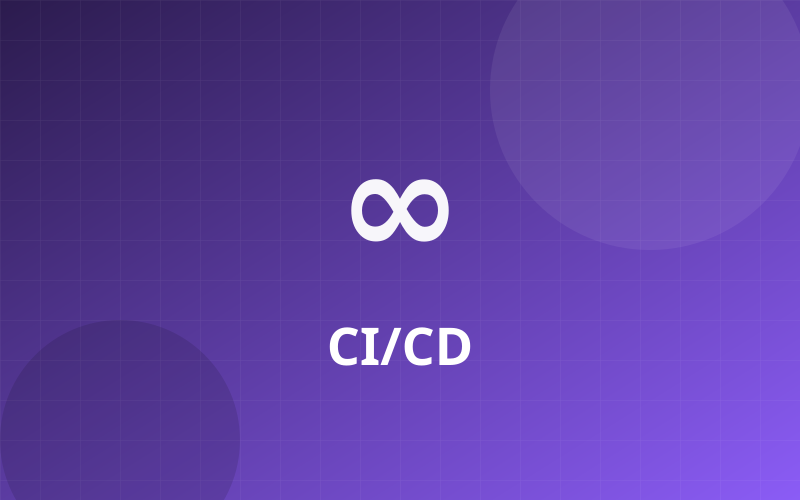

Mantenimiento de software sin sobresaltos

🟢 Node.js
APIs y servicios backend

🐍 Python
Automatización y datos
⚛️ React
Interfaces web modernas

🚀 Astro
Sitios rápidos y livianos

🐘 PHP / Laravel
Aplicaciones y sistemas a medida

🔷 TypeScript
Código tipado y mantenible
🗄️ PostgreSQL
Bases de datos relacionales

🍃 MongoDB
Bases de datos documentales

🐳 Docker
Contenedores y despliegues

☁️ AWS / Cloud
Infraestructura en la nube
🔐 Seguridad
Parches y auditorías

🔁 CI/CD
Integración y entrega continua
Tecnologías que mantenemos
Mantenemos tus aplicaciones actualizadas, seguras y funcionando para que te centres en tu negocio.